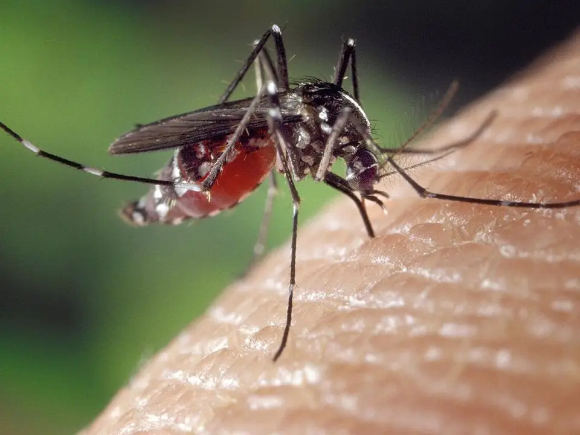

Moustique tigre : profiter à nouveau du jardin
Il pique le jour, surtout le matin et en fin d'après-midi, et vit près de chez vous : il pond dans la moindre eau stagnante. Le combattre commence par supprimer ses gîtes.
Mis à jour le · par Mathias Sergent, technicien certifié
- Technicien certifié Certibiocide
- Particuliers et professionnels
- Tout le département 13

Petit, noir et blanc, actif le jour
Le moustique tigre mesure moins d'un centimètre. Il est noir avec des rayures blanches sur les pattes et une ligne blanche sur le dos.
Il vole peu : s'il vous pique dans votre jardin, il est né à quelques dizaines de mètres, souvent chez vous ou chez le voisin immédiat.
Il est installé dans la plupart des communes du département et pique surtout de mai à novembre.
Où il pond chez vous
- Soucoupes de pots de fleurs et dessous de jardinières.
- Gouttières mal vidées, regards, siphons de terrasse.
- Récupérateurs d'eau non couverts, arrosoirs, seaux.
- Jouets, bâches, pneus qui retiennent l'eau.
- Bondes et avaloirs peu utilisés.
Comment on traite un jardin
- Visite des gîtes
Repérage de tous les points d'eau stagnante du terrain, y compris ceux qu'on ne voit pas.
- Suppression
Vidage, couverture ou traitement des gîtes qui ne peuvent pas être supprimés.
- Traitement de la végétation
Pulvérisation ciblée des zones où les adultes se reposent : haies, massifs, dessous des arbustes.
- Conseils
Liste des gestes à tenir chaque semaine pour éviter le retour des larves.
Le geste le plus efficace
Une fois par semaine, videz tout ce qui contient de l'eau : il faut environ une semaine entre la ponte et l'adulte. Ce simple geste, fait aussi par les voisins, réduit fortement les piqûres.
Couvrez les récupérateurs d'eau d'une moustiquaire fine et vérifiez l'écoulement des gouttières.
Lutte contre le moustique tigre dans les Bouches-du-Rhône
Nous intervenons à Marseille (16 arrondissements), dans le Pays d'Aix et autour d'Aubagne, depuis notre base de Trets. Nous passons aussi régulièrement à Gardanne et à Gémenos.
Le rendez-vous est fixé à l'appel, du lundi au samedi de 8 h à 19 h. Décrivez ce que vous voyez, ou envoyez une photo : cela nous aide à venir avec le bon matériel.
Où le moustique tigre se reproduit-il ?
| Signe | Ce que ça indique | Que faire |
|---|---|---|
| Soucoupes sous les pots de fleurs | Gîte larvaire très fréquent | Vider chaque semaine ou remplir de sable |
| Gouttières bouchées | Eau stagnante en hauteur | Nettoyer pour que l'eau s'écoule |
| Récupérateur d'eau de pluie ouvert | Gîte larvaire important | Couvrir avec une moustiquaire |
| Piqûres en journée au jardin | Moustique tigre adulte | Supprimer les gîtes, puis traiter la végétation |
Par exemple, un simple bouchon de bouteille rempli d'eau peut suffire à des larves de moustique tigre. En pratique, il pique surtout le jour, contrairement au moustique commun. Concrètement, vider les eaux stagnantes chaque semaine casse son cycle, qui dure environ une semaine. Exemple fréquent : des larves dans les regards d'eaux pluviales ou les jouets d'enfants restés dehors.
Moustique tigre : vos questions
Un traitement suffit-il pour toute la saison ?
Non : le traitement réduit fortement la population, mais de nouveaux gîtes se créent à chaque pluie. Il doit être complété par la suppression régulière des eaux stagnantes.
Le traitement est-il dangereux pour mes animaux ?
Les consignes sont données avant l'intervention : en général, les animaux restent à l'écart de la zone traitée le temps du séchage.
Peut-on signaler le moustique tigre ?
Oui, sur le portail de signalement de l'Anses. Cela aide à suivre sa progression.
Le moustique tigre transmet-il des maladies ?
Il peut transmettre la dengue, le chikungunya ou le Zika lorsqu'il a piqué une personne infectée. Pour toute question de santé, consultez un médecin ou un pharmacien.
Un traitement suffit-il pour tout l'été ?
Non : sans suppression des gîtes, les moustiques reviennent. Le traitement de la végétation complète la suppression des eaux stagnantes, il ne la remplace pas.